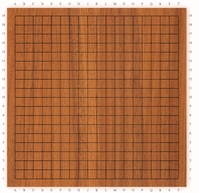

BetaGo
So, you don't work at Google Deep Mind and you don't have access to Nature. You've come to the right place. BetaGo will stay beta! We are the 99%! We are Lee Sedol!

BetaGo lets you roll your own Go engine. It downloads Go games for you, preprocesses them, trains a model on data, e.g. a neural network using keras, and serves the trained model to an HTML front end, which you can use to play against your own Go bot.
It's alive
Test BetaGo by running the following commands. It should start a playable demo in your browser! This bot plays a reasonable moves, but is still very weak.
pip install betago
git clone https://github.com/maxpumperla/betago
cd betago
python run_demo.pyContribute
You can modify and extend any of the steps outlined above and help decrease the gap between AlphaGo and BetaGo, tear down walls and disrupt the establishment. Consider contributing by:
- Adding new models to the model zoo.
- Writing new Go data processing functionality.
- Adding more complex models and bots.
How can I run my own bot?
Training and serving a bot can be done in just a few steps. The following example uses a convolutional neural network implemented in keras, but you are free to choose other libraries as well. The code for this example can be found in the examples folder.
We start by defining a Go data processor, which downloads an preprocesses Go games. A regular Go board consists of 19 times 19 fields. The SevenPlaneProcessor, inspired by [1] loads seven planes of 19*19 data points, three layers representing moves of varying liberties for each color and one capturing for ko.
from betago.dataloader.processor import SevenPlaneProcessor
processor = SevenPlaneProcessor()
input_channels = processor.num_planes
# Load go data and one-hot encode labels
X, y = processor.load_go_data(num_samples=1000)
X = X.astype('float32')
Y = np_utils.to_categorical(y, nb_classes)Next, we train a neural network to predict moves. If you insist, you may call it a policy network. This example is just one of many possible architectures to tackle this problem and by no means optimal. Feel free to add or adapt layers and come up with your own experiments. We use the new Keras 1.0 here, but you could use older versions as well.
batch_size = 128
nb_epoch = 20
nb_classes = 19 * 19 # One class for each position on the board
go_board_rows, go_board_cols = 19, 19 # input dimensions of go board
nb_filters = 32 # number of convolutional filters to use
nb_pool = 2 # size of pooling area for max pooling
nb_conv = 3 # convolution kernel size
# Specify a keras model with two convolutional layers and two dense layers,
# connecting the (num_samples, 7, 19, 19) input to the 19*19 output vector.
model = Sequential()
model.add(Convolution2D(nb_filters, nb_conv, nb_conv, border_mode='valid',
input_shape=(input_channels, go_board_rows, go_board_cols)))
model.add(Activation('relu'))
model.add(Convolution2D(nb_filters, nb_conv, nb_conv))
model.add(Activation('relu'))
model.add(MaxPooling2D(pool_size=(nb_pool, nb_pool)))
model.add(Dropout(0.2))
model.add(Flatten())
model.add(Dense(256))
model.add(Activation('relu'))
model.add(Dropout(0.5))
model.add(Dense(nb_classes))
model.add(Activation('softmax'))
model.compile(loss='categorical_crossentropy',
optimizer='adadelta',
metrics=['accuracy'])
# Fit the model to data
model.fit(X, Y, batch_size=batch_size, nb_epoch=nb_epoch, verbose=1)With processor and model we can initialize a so called KerasBot, which will serve the model for us.
import os
import webbrowser
# Open web frontend, assuming you cd'ed into betago
webbrowser.open('file://' + os.getcwd() + '/ui/demoBot.html', new=2)
# Create a bot from processor and model, then run it.
from betago.model import KerasBot
go_model = KerasBot(model=model, processor=processor)
go_model.run()Tell me how it works
Alright, alright. BetaGo consists of a just few components, all of which you have already seen. First, to load and process data into memory, we use a GoDataProcessor. BetaGo comes with two such processors out of the box, namely SevenPlaneProcessor and the simpler ThreePlaneProcessor but it's relatively straight forward to add new ones. The processor loads an index of zip files containing .sgf files with Go games and prepares them for further usage. There's a lot of Go games on KGS, so if you are not careful and try to load too many files this way, your application may crash. This is where GoFileProcessor comes in, which stores data in a lean, binary format to be picked up later on. The work on processors originated from @hughperkins kgsgo-dataset-preprocessor project, which deserves a lot of credit.
Next, to actually predict moves on data processed by any of the above processors, we provide a default implementation of a GoModel, called KerasBot, which trains a deep network of your choice and exposes it to a Flask REST API, whereas IdiotBot simply makes random moves. KerasBot will try to place the best move, but will take inferior moves if predicted values turn out to be illegal moves. Notably, it is very handy to use keras here, but creating a new GoModel from scratch is not that hard. In particular, it should be possible to extend the simple approach of KerasBot to something more sophisticated, e.g. by borrowing ideas from AlphaGo and other approaches from the literature.
The UI uses a fork of @jokkebk awesome jgoboard, and the current Go board front end is just a plain JavaScript client for the above Flask server.
Motivation
Being both a passionate and mediocre Go player and programmer, this project is a matter of honor to me. Also, I tried to get in touch with the AlphaGo team, as I'm very curious to hear what their AI has to say about the probability of the most famous of all Go moves, Shusaku's ear reddening move. Well, I never heard back from them, so I had to take matters into my own hands. Also, after white move 78 in game 4 of AlphaGo against Lee Sedol, the ear reddening move might even have lost its mythical number one position. Thanks again. Anyway, here you go:

Literature
[1] A. Clark, A. Storkey Teaching Deep Convolutional Neural Networks to Play Go.
[2] C.J. Maddison, A. Huang, I. Sutskever, D. Silver Move Evaluation in Go using Deep Neural Networks
[3] D. Silver, A. Huang, C.J. Maddison, A. Guez, L. Sifre, G. van den Driessche, J. Schrittwieser, I. Antonoglou, V. Panneershelvam, M. Lanctot, S. Dieleman, D. Grewe, J. Nham, N. Kalchbrenner, I. Sutskever, T. Lillicrap, M. Leach, K. Kavukcuoglu, T. Graepel & D. Hassabis Mastering the game of Go with deep neural networks and tree search